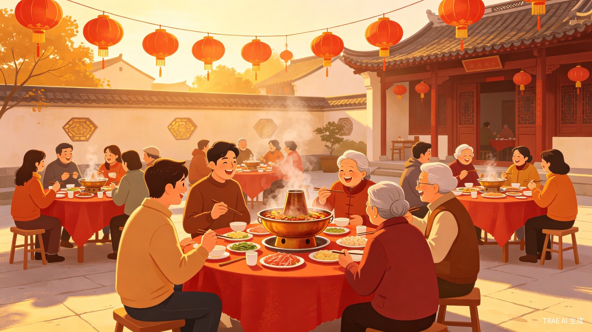
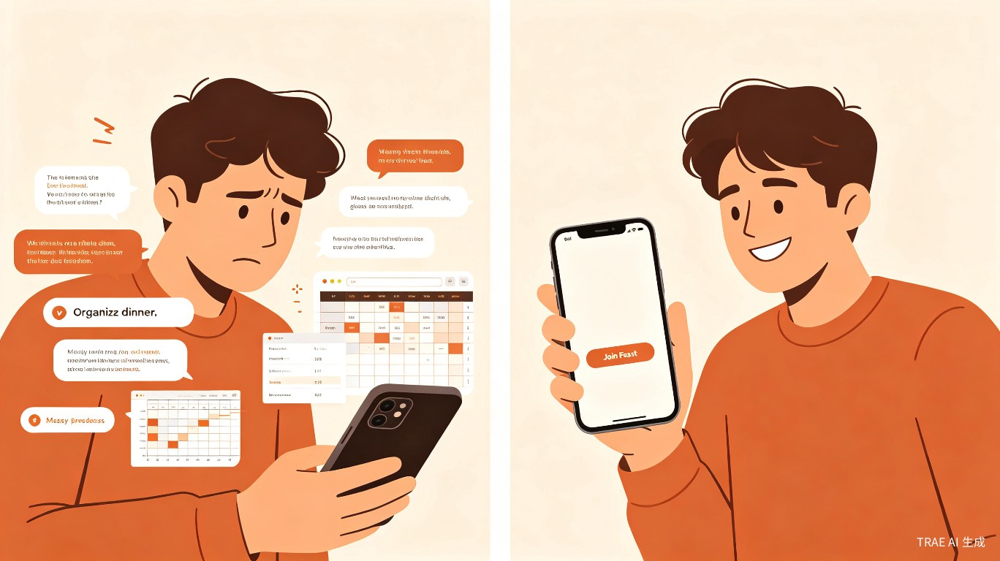
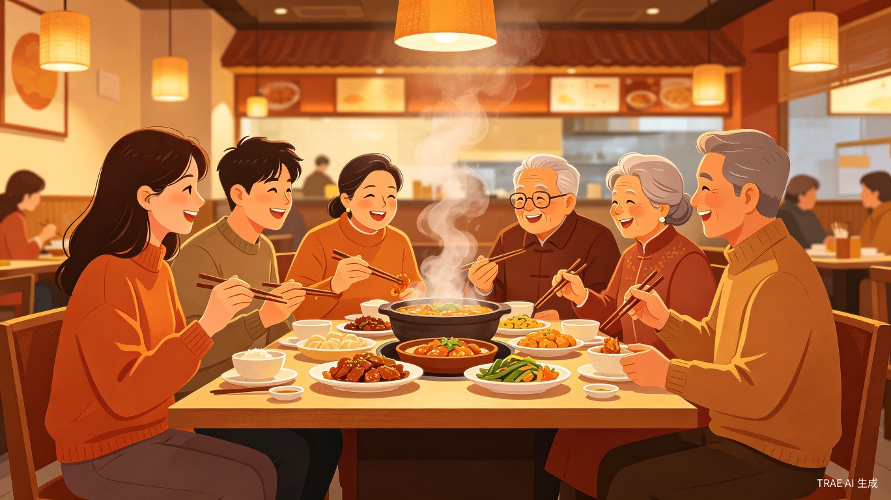

约饭不难
组织一桌饭太难了
"想吃一顿热闹的，但凑不齐人"
"想发起一个局，但统计时间、确认菜品、协调口味太繁琐"
现有约饭产品全是陌生人社交，熟人之间反而没有好用的工具

熟人之间的多人AA聚餐约饭工具。队长发起坝坝宴，组员申请入伙，无需提前支付，现场AA分摊。
Agenda · 议程
熟人聚餐的组织成本太高，市场存在空白
打平伙——极简的熟人约饭工具
无需预付、仅队长实名、全年龄段覆盖
从成都一城起步，逐步扩展

"想吃一顿热闹的，但凑不齐人"
"想发起一个局，但统计时间、确认菜品、协调口味太繁琐"
现有约饭产品全是陌生人社交，熟人之间反而没有好用的工具

解决方案 · Solution
不是陌生人社交平台，是熟人之间的约饭工具。队长发起坝坝宴帖子到广场，想参加的申请入伙，队长审核通过即可。无需提前支付，餐后现场AA分摊。
Product · 产品
极简流程，全年龄段友好，让约饭回归简单
Features · 功能特色
广场上都是认识或半认识的人，队长审核把关，安心入伙
申请入伙不需要缴纳押金，餐后现场AA分摊
仅队长需要人脸识别+身份证认证，组员注册仅需手机号
申请通过后自动进入临时群聊，活动结束后自动解散
无需下载APP，一键即用。大字体模式、语音输入、一键拨号
传承四川"打平伙"文化，费用共担、快乐共享
How-to · 使用流程
完成实名认证后，填写时间、地点、菜单、人均预算，发布到广场
浏览广场，找到感兴趣的聚餐，填写申请理由，无需缴纳任何费用
查看申请人资料，决定是否通过。通过后自动加入活动群聊
按约定时间到场，餐后现场AA分摊。平台提供人均费用参考
Competition · 竞品对比
Coverage · 覆盖范围
岁起
岁止
微信小程序无需下载，大字体模式、语音输入、一键拨号，老年人也能轻松使用
Business · 商业
从成都一城起步，验证核心闭环，逐步扩展
Business Model · 商业模式
MVP阶段完全免费，积累用户和口碑。平台不介入支付，零资金合规风险。
与餐厅合作推出"打平伙专享套餐"，平台抽取小额服务费（3-5%）。
队长激励计划、活动照片墙、优先推荐位等增值服务。
Roadmap · 迭代路线
成都一城，核心闭环验证。队长实名认证、广场浏览、申请入伙、现场AA
大字体、语音输入上线。拓展至重庆、贵阳。文化百科模块上线
餐厅合作套餐、队长激励计划。试点云南、湖南等文化相近地区
Team & Ask · 团队与融资
用于MVP开发、种子用户招募、成都市场验证。预计6个月内验证核心闭环，12个月内扩展至3个城市。